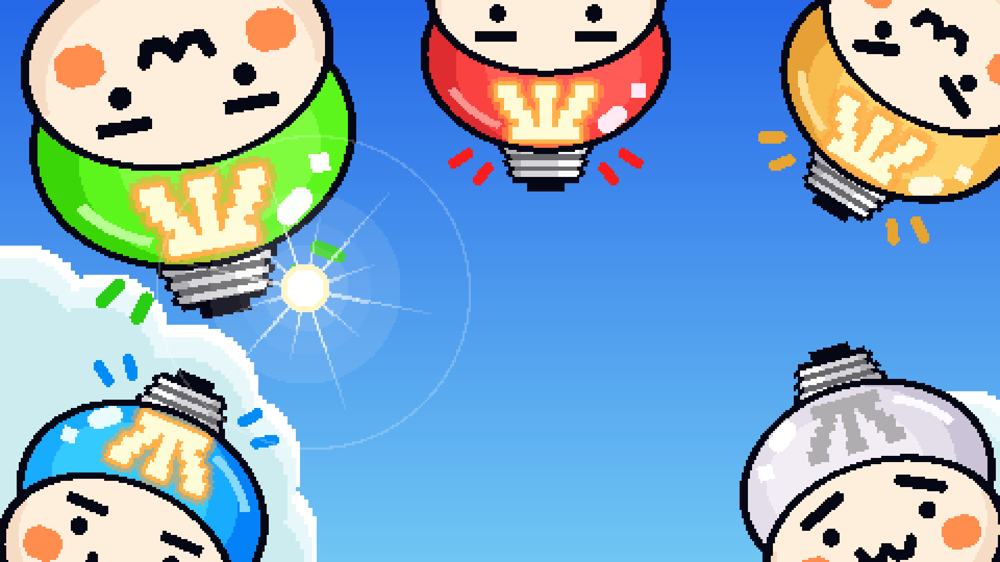

<!doctype html>
<html lang="ko">
<meta charset="utf-8">
<meta name="viewport" content="width=device-width,initial-scale=1">
<title>다시 켜지는 하루</title>
<style>
@font-face{font-family:Pretendard;font-weight:900;font-display:swap;src:url(fonts/Pretendard-Black.subset.woff2)}
@font-face{font-family:Pretendard;font-weight:600;font-display:swap;src:url(fonts/Pretendard-SemiBold.subset.woff2)}
*{box-sizing:border-box}
html{scrollbar-width:none}html::-webkit-scrollbar{display:none}
html.lock{overflow:hidden}
body{margin:0;background:#0e1024;color:#f4f1ea;font-family:Pretendard,system-ui,"Malgun Gothic",sans-serif;font-weight:600;word-break:keep-all}
button{font:inherit;color:inherit;cursor:pointer}
:focus-visible{outline:4px solid #fff;outline-offset:3px}
h1,h2,h3,p{margin:0}h1,h2,h3{font-weight:900}
.px{background:#fff;color:#14142b;border:4px solid #0a0a18;box-shadow:0 6px 0 #0a0a18;padding:.7em 1.4em;letter-spacing:.06em}
.px:hover{background:#ffe27a}.px:active{transform:translateY(4px);box-shadow:0 2px 0 #0a0a18}
/* 1, 2 */
.screen{position:fixed;inset:0;z-index:10;overflow:hidden;transition:opacity .7s}
.screen[hidden]{display:none}.screen.out{opacity:0;pointer-events:none}
#intro{background:#4b98ee}
#intro img{position:absolute;inset:0;width:100%;height:100%;object-fit:cover;image-rendering:pixelated}
.ask{position:absolute;left:52%;top:65%;transform:translate(-50%,-50%);width:min(40vw,90%);text-align:center}
.ask h1{font-size:clamp(20px,2.35vw,46px);line-height:1.5;letter-spacing:.05em;text-shadow:0 3px 0 #0a1a44;margin-bottom:1.1em}
.ask div{display:flex;flex-direction:column;gap:clamp(12px,2vh,20px);align-items:center}
.ask .px{width:min(340px,100%);font-size:clamp(16px,1.5vw,24px)}
#burst canvas{position:absolute;inset:0;width:100%;height:100%;image-rendering:pixelated}
.bt{position:absolute;inset:0;display:flex;flex-direction:column;align-items:center;justify-content:center;text-align:center;padding:20px;color:#3a2200;opacity:0;visibility:hidden;transition:opacity .6s}
.bt.on{opacity:1;visibility:visible}
.bt h1{font-size:clamp(38px,6vw,88px);letter-spacing:.1em;margin-bottom:.45em}
.bt .px{font-size:clamp(17px,1.7vw,25px)}
.bt h2{font-size:clamp(17px,1.4vw,22px);margin:2em 0 .5em;letter-spacing:.05em}.bt p{font-size:clamp(16px,1.35vw,21px);line-height:1.6;max-width:34em}
/* 3~7 */
#scroll{height:820vh;position:relative}
#stage{position:sticky;top:0;height:100vh;overflow:hidden}
#c{display:block;width:100%;height:100%}
.cap{position:absolute;left:6%;right:6%;top:9vh;text-align:center;pointer-events:none;opacity:0;text-shadow:0 2px 0 #0a0a18,2px 0 0 #0a0a18,-2px 0 0 #0a0a18,0 -2px 0 #0a0a18}
.cap h2{font-size:clamp(30px,4.6vw,62px);letter-spacing:.1em;text-shadow:0 3px 0 #000}
.cap p{margin:14px auto 0;font-size:clamp(16px,1.6vw,22px);line-height:1.65;letter-spacing:.04em;max-width:36em;white-space:pre-line}
.hint{position:absolute;left:50%;bottom:2.5vh;transform:translateX(-50%);font-size:15px;letter-spacing:.14em;text-shadow:0 2px 0 #000;animation:bob 1.4s steps(2) infinite;white-space:nowrap;pointer-events:none}
@keyframes bob{50%{transform:translate(-50%,6px)}}
.dots{position:absolute;right:18px;top:50%;transform:translateY(-50%);display:flex;flex-direction:column;gap:4px}
.dots button{width:26px;height:26px;border:0;background:none;padding:0;display:grid;place-items:center}
.dots i{width:11px;height:11px;outline:2px solid #000;transition:transform .2s}.dots .on i{transform:scale(1.6)}
.piece{position:absolute;left:0;top:0;width:76px;height:64px;margin:-64px 0 0 -38px;padding:0;border:0;background:none;opacity:0;visibility:hidden;transition:opacity .4s}
.piece.on{opacity:1;visibility:visible}
.piece span{position:absolute;left:0;right:0;top:-11px;text-align:center;font-size:13px;line-height:1;letter-spacing:.06em;color:#fff;text-shadow:0 1px 0 #0a0a18,1px 0 0 #0a0a18,-1px 0 0 #0a0a18,0 -1px 0 #0a0a18,1px 1px 0 #0a0a18,-1px 1px 0 #0a0a18;animation:fl 1s steps(3) infinite alternate}
.piece svg{width:100%;height:100%;animation:fl 1s steps(3) infinite alternate;filter:drop-shadow(0 0 9px var(--c))}
.piece:hover svg{filter:drop-shadow(0 0 18px var(--c)) brightness(1.15)}
@keyframes fl{to{transform:translateY(-10px)}}
#srcBtn{position:absolute;left:18px;bottom:16px;background:#0a0a18;border:2px solid #fff;padding:6px 12px;font-size:13px;opacity:0;visibility:hidden}#srcBtn.on{opacity:1;visibility:visible}
.dots .home{width:40px;height:40px;margin:0 -7px 8px;background:#0a0a18;border:2px solid #fff}.dots .home:hover{background:#3a3c66}.dots .home svg{width:24px;height:24px}
/* 창 */
dialog{border:6px solid #0a0a18;background:#fbf6e6;color:#1c1a2b;padding:0;width:min(1180px,88vw);height:min(760px,84vh);max-width:none;max-height:none;margin:auto;overflow:hidden}
dialog[open]{display:flex;flex-direction:column}
dialog::backdrop{background:transparent}
.bar{display:flex;align-items:center;gap:14px;padding:16px 20px 14px;background:#22233f;color:#fff;border-bottom:6px solid #0a0a18;flex:none}
.lamps{display:flex;gap:12px;flex:none}
.lamps i{position:relative;width:24px;height:24px;border-radius:50%;border:3px solid #0a0a18;background:var(--c)}
.lamps i.on{box-shadow:0 0 18px 6px var(--c)}
.bar h2{font-size:clamp(20px,2.7vw,36px);line-height:1.2;letter-spacing:.06em;flex:1;padding-left:6px}
.bar button{width:44px;height:44px;border:3px solid #0a0a18;background:#fff;color:#14142b;font-weight:900;font-size:20px;padding:0}
.bar #back{width:auto;padding:0 14px;font-weight:600;font-size:16px;white-space:nowrap}.bar button:hover{background:#ffe27a}.bar [hidden]{display:none}
.body{overflow:auto;padding:clamp(18px,3vw,36px);flex:1;line-height:1.7;font-size:clamp(15px,1.2vw,18px)}
.foot{position:absolute;right:20px;bottom:16px;display:flex;gap:14px}.foot[hidden]{display:none}
.foot a,.nk a{width:44px;height:44px;border:3px solid #0a0a18;display:grid;place-items:center;text-decoration:none;font-weight:900;font-size:20px;color:#0a0a18}.foot a.n,.nk a.n{background:#03c75a}.foot a.k,.nk a.k{background:#fee500}.foot a:hover,.nk a:hover{filter:brightness(1.1)}.foot a:focus-visible,.nk a:focus-visible{outline-color:#22233f}
.body:has(+ .foot:not([hidden])){padding-bottom:76px}
.nk{display:flex;gap:10px;margin-left:auto;flex:none}
.two{display:grid;grid-template-columns:1.1fr 1fr;gap:clamp(20px,3vw,40px);align-items:start}
.pic{border:4px solid #0a0a18;background:#bfe0f2;aspect-ratio:4/3;display:flex;align-items:flex-end;justify-content:center;width:100%;overflow:hidden;position:relative}
.pic canvas{image-rendering:pixelated;max-width:86%;max-height:88%}
.pic::after{content:"사진 넣을 자리";position:absolute;right:8px;top:8px;background:#0a0a18;color:#fff;font-size:12px;padding:2px 8px}
.body h3{font-size:1.45em;margin-bottom:.5em}.body p+p{margin-top:.8em}
.todo{color:#75695a}
.cards{display:grid;grid-template-columns:1fr 1fr;gap:32px 36px}
.card{display:flex;gap:16px;align-items:center}
.card .ic{width:108px;height:108px;flex:none;border:4px solid #0a0a18;background:#fff;display:grid;place-items:center}
.goods{display:grid;grid-template-columns:repeat(3,1fr);gap:18px 26px}.goods .ph{aspect-ratio:2/1}
.ph{border:4px solid #0a0a18;background:#ffe9a6;aspect-ratio:4/3;display:grid;place-items:center;color:#75581a;margin-bottom:8px;font-size:14px}
.cast{display:grid;grid-template-columns:repeat(5,1fr);gap:10px;text-align:center;margin-bottom:24px}
.cast figure{margin:0}
.cast div{background-repeat:no-repeat;background-size:800% 100%;background-position:28.571% 0;aspect-ratio:448/480;image-rendering:pixelated}
.map svg{width:100%;border:4px solid #0a0a18;background:#dff0d2;display:block}
.map ol{list-style:none;margin:0;padding:0;display:grid;gap:8px}
.map li button{width:100%;text-align:left;border:3px solid #0a0a18;background:#fff;padding:8px 12px;display:flex;gap:12px;align-items:center}
.map li button:hover{background:#ffe27a}
.map li b{width:28px;height:28px;border-radius:50%;background:var(--c);border:3px solid #0a0a18;display:grid;place-items:center;font-size:14px;flex:none;color:#0a0a18}
table{border-collapse:collapse;width:100%}td,th{border:2px solid #0a0a18;padding:8px 10px;text-align:left;word-break:break-all}
th:last-child,td:last-child{white-space:nowrap}
@media(max-width:760px){.two,.cards{grid-template-columns:1fr}.goods{grid-template-columns:1fr 1fr}.ask{left:50%;width:88%}
 .dots{flex-direction:row;top:10px;right:10px;transform:none;align-items:center}.dots .home{margin:0 6px 0 0}.dots button{width:30px;height:40px}
 .cap{top:72px}.cap p{white-space:normal;text-wrap:balance}
 .card{flex-wrap:nowrap;gap:12px}.card .ic{width:72px;height:72px}.nk{gap:6px}.nk a{width:36px;height:36px;font-size:17px}
 .piece{width:62px;height:52px;margin:-52px 0 0 -31px}
 dialog{width:92vw;height:86vh}.bar{flex-wrap:wrap;gap:10px 12px;padding:12px 16px}.lamps{gap:8px;margin-right:auto}.lamps i{width:18px;height:18px}.bar #back{padding:0 9px;font-size:15px}.bar h2{order:3;flex:0 0 100%;padding:0;font-size:26px}
 .cast{gap:4px}.cast figcaption{font-size:12px;line-height:1.3}
 #wb table,#wb tbody,#wb tr,#wb td{display:block}#wb th{display:none}#wb td{border:0;padding:2px 0}#wb tr+tr{border:2px solid #0a0a18;padding:8px 10px;margin-bottom:10px}}
@media(max-width:760px) and (orientation:portrait){#intro img{object-position:top}
 .ask{left:0;top:0;transform:none;width:100%;height:100%}.ask h1{position:absolute;left:31%;right:27%;top:72vw;font-size:clamp(16px,4.7vw,22px);line-height:1.55;margin:0}.ask h1 .pc{display:none}
 .ask div{position:absolute;left:0;right:0;top:min(120vw,100% - 212px);gap:14px}.ask .px{width:52vw;padding:.8em .4em;font-size:clamp(15px,4.3vw,19px)}}
@media(prefers-reduced-motion:reduce){.piece svg,.piece span,.hint{animation:none}}
</style>

<section class="screen" id="intro">
  <picture><source media="(max-width:760px) and (orientation:portrait)" srcset="img/bulbs-lookdown-m.png"></picture>
  <div class="ask"><h1>용사여 빛을 찾으러 가는<br class="pc"> 여정에 함께 해주세요..</h1>
  <div><button class="px">귀여우니까 간다</button><button class="px">불쌍하니까 간다</button><button class="px">이상하니까 간다</button></div></div>
</section>
<section class="screen" id="burst" hidden>
  <canvas id="bc"></canvas>
  <div class="bt" id="bt"><h1>다시 켜지는 하루</h1><button class="px" id="go">빛의 숲에서 빛 조각 모으기</button>
  <h2>빛의 숲 (ACC 지상 정원)</h2><p>ACC는 옛 전남도청 뒤 땅 아래에 지은 복합문화공간이에요.<br>그 위 지상에는 ‘빛의 숲’이 펼쳐져 있어요.</p></div>
</section>

<main id="scroll"><div id="stage">
  <canvas id="c"></canvas><div id="caps"></div><div id="pieces"></div>
  <div class="hint" id="hint"></div><div class="dots" id="dots"></div><button id="srcBtn">출처</button>
</div></main>
<dialog id="win" aria-labelledby="wt"><div class="bar"><div class="lamps" id="lamps"></div><h2 id="wt"></h2><button id="back" hidden>← 지도로</button><button id="x" aria-label="창 닫기">✕</button></div><div class="body" id="wb"></div><div class="foot" id="foot" hidden></div></dialog>

<script>
const $=id=>document.getElementById(id);
const cv=$('c'),ctx=cv.getContext('2d'),buf=document.createElement('canvas'),g=buf.getContext('2d');
const PX=4,D=Math.PI/180,STEP=48;let W,H,dpr,bw,bh;
const sm=(a,b,x)=>{x=Math.min(1,Math.max(0,(x-a)/(b-a)));return x*x*(3-2*x)};
const hash=(a,b)=>{let h=(a*374761393+b*668265263)^0x5bd1e995;h=Math.imul(h^(h>>>13),1274126177);return ((h^(h>>>16))>>>0)/4294967296};
const rgb=c=>`rgb(${c[0]|0},${c[1]|0},${c[2]|0})`,mix=(a,b,t)=>a.map((v,i)=>v+(b[i]-v)*t);
const calm=matchMedia('(prefers-reduced-motion:reduce)').matches;

/* ===== 글: 여기만 고치면 됨. 전구 순서 흰 → 파 → 빨 → 초 → 노 ===== */
const SCENES=[
 {spr:'white',glow:null,c:'#f4f3ff',t:'빛을 잃은 하루',p:'바쁘게 살다 나를 돌보지 못한 전구가 빛을 잃었어요.\n다시 켜지려고 빛고을 광주로 빛 조각을 찾으러 가요.\n혼자서는 다시 빛날 수 없어서 당신의 도움이 필요해요.'},
 {spr:'blue',glow:[70,170,255],c:'#3aa5ff',t:'보고, 파란 빛',p:'ACC 전시와 옛 전남도청, 전일빌딩245를\n천천히 둘러보며 파란 빛 조각을 찾아요.'},
 {spr:'red',glow:[255,80,80],c:'#ff4a4a',t:'먹고, 빨간 빛',p:'충장로와 구시청, 동명동에서\n한 끼를 천천히 즐기며 빨간 빛 조각을 찾아요.'},
 {spr:'green',glow:[100,255,100],c:'#56e04a',t:'걷고, 초록 빛',p:'충장로 골목을 걷고 하늘마당에 누워 쉬며\n초록 빛 조각을 찾아요.'},
 {spr:'yellow',glow:[255,210,100],c:'#ffc53a',t:'빛이 완성됐어요',p:'빨강·초록·파랑 빛이 모여 노란 빛이 켜졌어요.\n함께 걸어 줘서 고마워요.'},
];
/* 항목 창 맨 아래 지도 버튼: 검색어만 고치면 됨 */
// [네이버, 카카오] 순서. 하나만 쓰면 둘 다 같은 검색어
const MAPQ={dochung:['옛 전남도청'],jeonil:['전일빌딩245'],chung:['광주 충장로거리','광주 충장로'],gusi:['광주 구시청','광주 구시청사거리'],dong:['광주 동구 동명동'],hanul:['광주 하늘마당','ACC 하늘마당']};
const nUrl=q=>'https://map.naver.com/p/search/'+encodeURIComponent(q),kUrl=q=>'https://map.kakao.com/link/search/'+encodeURIComponent(q);
const nk=(n,k,t)=>`<a class="n" href="${n}" target="_blank" rel="noopener" title="네이버 지도" aria-label="${t} 네이버 지도에서 보기">N</a><a class="k" href="${k}" target="_blank" rel="noopener" title="카카오맵" aria-label="${t} 카카오맵에서 보기">K</a>`;
/* 빨간 빛 가게 18칸: 가게가 정해지면 이름·설명·네이버 주소(n)·카카오 주소(k)를 채우면 됨. 주소가 비면 동네 검색으로 연결 */
const shops=n=>[1,2,3,4,5,6].map(i=>({name:`${n} 맛집 ${i}`,info:'가게 이름·메뉴·위치 자리',n:'',k:''}));
const SHOPS={gusi:shops('구시청'),chung:shops('충장로'),dong:shops('동명동')};
const todo=s=>`<p class="todo">${s}</p>`;
/* 빛 조각이 뜨는 건물: ph = 앞뒤 각도, lam = 좌우 각도 */
const LM=[
 [{k:'char',n:'캐릭터 소개·스토리',ph:13,lam:-23},{k:'map',n:'지도',ph:14,lam:21}],
 [{k:'acc',n:'ACC 전시',ph:5,lam:-17},{k:'dochung',n:'옛 전남도청',ph:16,mph:37,lam:-29},{k:'jeonil',n:'전일빌딩245',ph:13,lam:22}],
 [{k:'gusi',n:'구시청',ph:15,mph:43.5,lam:-31},{k:'chung',n:'충장로',ph:5,lam:-15},{k:'dong',n:'동명동',ph:12,lam:23}],
 [{k:'hanul',n:'하늘마당',ph:13,lam:-24},{k:'alley',n:'충장로 골목',ph:13,lam:24}],
 [{k:'pam',n:'팜플렛',ph:13,lam:-22},{k:'shop',n:'굿즈샵',ph:13,lam:22}],
];
const BN=['흰 전구','파란 전구','빨간 전구','초록 전구','노란 전구'];
const WIN={
 char:{h:'캐릭터 소개·스토리',html:()=>`<div class="cast">${SCENES.map((s,i)=>`<figure><div style="background-image:url(img/${s.spr}-walk.png?v=3)"></div><figcaption>${BN[i]}</figcaption></figure>`).join('')}</div><h3>빛을 찾으러 온 전구</h3><p>바쁘게 살다 나를 돌보지 못해 하얗게 꺼진 전구예요. 광주(光州)는 ‘빛의 고을’이라는 뜻이라, 다시 빛나기 위해 이곳으로 왔어요.</p><p>보고, 먹고, 걸으며 파랑·빨강·초록 빛 조각을 모으면 노란 빛으로 다시 켜져요.</p>${todo('이름 미정. 정해지면 여기에 들어가요.')}`},
 map:{h:'WORLD MAP',html:mapHTML},
 acc:{h:'ACC 전시',html:()=>pic('acc','ACC(국립아시아문화전당)','<p>옛 전남도청 뒤 땅 아래에 지은 복합문화공간이에요. 전시관과 도서관, 어린이문화원이 있어요.</p>'+todo('지금 열리는 전시 정보를 넣을 자리'))},
 dochung:{h:'옛 전남도청',html:()=>pic('dochung','옛 전남도청','<p>5·18민주화운동의 최후 항쟁지입니다. 2026년 전시관으로 다시 문을 열었습니다.</p>'+todo('관람 시간·해설 안내를 넣을 자리'))},
 jeonil:{h:'전일빌딩245',html:()=>pic('jeonil','전일빌딩245','<p>5·18 당시의 총탄 흔적 245개가 남아 있는 건물입니다.</p>'+todo('관람 시간·해설 안내를 넣을 자리'))},
 gusi:{h:'구시청',html:()=>cards('gusi')},chung:{h:'충장로',html:()=>cards('chung')},dong:{h:'동명동',html:()=>cards('dong')},
 hanul:{h:'하늘마당',html:()=>pic('hanul','하늘마당','<p>ACC 지붕 위에 있는 잔디언덕이에요.</p><p>누워서 풍경을 바라보세요.</p>')},
 alley:{h:'충장로 골목',html:()=>pic('alley','충장로 골목','<p>차 대신 사람이 걷는 상점가예요. ACC에서 걸어서 3분 거리예요.</p>'+todo('산책 코스를 넣을 자리'))},
 pam:{h:'팜플렛',html:()=>`<div class="two"><div class="ph" style="aspect-ratio:8/7">팜플렛 이미지 자리</div><div><h3>오늘의 여정을 한 장에</h3>${todo('팜플렛 파일이 완성되면 이미지와 내려받기 버튼을 넣을 자리')}</div></div>`},
 shop:{h:'굿즈샵',html:()=>`<div class="goods">${['하늘마당 피크닉 키트 (가칭)','빛 조각 전구 말랑이 (가칭)','쉼 텀블러 (가칭)','전구 캐릭터 키링','전구 캐릭터 인형','상품 준비 중'].map(n=>`<div><div class="ph">상품 사진 자리</div><b>${n}</b>${todo('가격 미정')}</div>`).join('')}</div>`},
 src:{h:'출처',html:()=>`<table><tr><th>사이트</th><th>주소</th><th>확인한 날짜</th></tr>
 <tr><td>GitHub AXC_team5 readme.md (RGB, 보고·먹고·걷고)</td><td>https://github.com/starlike2you/AXC_team5</td><td>2026-11-25</td></tr>
 <tr><td>GitHub AXC_team5 brand/world-bible.md (이야기·하늘마당·충장로 3분)</td><td>https://github.com/starlike2you/AXC_team5/blob/main/brand/world-bible.md</td><td>2026-11-25</td></tr>
 <tr><td>GitHub AXC_team5 brand/world-bible-before.md (옛 전남도청·전일빌딩245)</td><td>https://github.com/starlike2you/AXC_team5/blob/main/brand/world-bible-before.md</td><td>2026-11-25</td></tr>
 <tr><td>팀 자산 목록 inventory-v3.csv (ACC·충장로)</td><td>llm-local/inventory/inventory-v3.csv</td><td>2026-11-25</td></tr>
 <tr><td>샘플 상품 목록 (굿즈 이름 3개)</td><td>llm-local/design/my-sample-products.csv</td><td>2026-11-25</td></tr>
 <tr><td>네이버 지도 (장소 6곳 검색 결과)</td><td>https://map.naver.com</td><td>2026-11-25</td></tr>
 <tr><td>카카오맵 (장소 6곳 검색 결과)</td><td>https://map.kakao.com</td><td>2026-11-25</td></tr></table>${todo('내 컴퓨터에 받아 둔 팀 자료 기준. 각 자료에 적힌 원래 페이지는 이번에 다시 열어 보지 않았어요.')}`},
};
function pic(k,h,b){return `<div class="two"><div class="pic" data-spr="${k}"></div><div><h3>${h}</h3>${b}</div></div>`}
function cards(key){const q=MAPQ[key];return `<div class="cards">${SHOPS[key].map(p=>`<div class="card"><div class="ic"><svg width="44" height="52" viewBox="0 0 11 13" shape-rendering="crispEdges"><path fill="#0a0a18" d="M3 0h5v1h2v2h1v4h-1v2H9v2H7v2H4v-2H2V9H1V7H0V3h1V1h2z"/><path fill="#ff4a4a" d="M3 1h5v1h1v1h1v4H9v2H8v2H6v1H5v-1H3V9H2V7H1V3h1V2h1z"/><path fill="#fff" d="M4 3h3v1h1v2H7v1H4V6H3V4h1z"/></svg></div><div><b>${p.name}</b>${todo(p.info)}</div><div class="nk">${nk(p.n||nUrl(q[0]),p.k||kUrl(q[1]||q[0]),p.name)}</div></div>`).join('')}</div>`}
function mapHTML(){
 const P=[['dochung','옛 전남도청',250,250,1],['jeonil','전일빌딩245',170,130,1],['chung','충장로',95,235,2],['gusi','구시청',190,375,2],['dong','동명동',510,165,2],['hanul','하늘마당',440,355,3]],L='M250 250L170 130L95 235L190 375L440 355L510 165';
 return `<div class="two map"><div><svg viewBox="0 0 620 460" role="img" aria-label="ACC 주변 약도"><path d="${L}" fill="none" stroke="#0a0a18" stroke-width="13" stroke-linejoin="round"/><path d="${L}" fill="none" stroke="#fff3c4" stroke-width="6" stroke-dasharray="14 10"/><rect x="300" y="215" width="120" height="80" fill="#2f5f7a" stroke="#0a0a18" stroke-width="5"/><text x="360" y="265" font-size="28" font-weight="900" fill="#fff" text-anchor="middle">ACC</text>${P.map((q,i)=>`<circle cx="${q[2]}" cy="${q[3]}" r="23" fill="${SCENES[q[4]].c}" stroke="#0a0a18" stroke-width="5"/><text x="${q[2]}" y="${q[3]+8}" font-size="22" font-weight="900" text-anchor="middle" fill="#0a0a18">${i+1}</text>`).join('')}</svg>${todo('약도라 실제 방향·거리와 달라요.')}</div><ol>${P.map((q,i)=>`<li style="--c:${SCENES[q[4]].c}"><button data-open="${q[0]}"><b>${i+1}</b>${q[1]}</button></li>`).join('')}</ol></div>`}

/* ===== 건물 픽셀 스프라이트 ===== */
function spr(w,h,fn){const c=document.createElement('canvas');c.width=w;c.height=h;const x=c.getContext('2d');fn(x,w,h);return c}
function tower(w,h,base,lit,litC,seed){return spr(w,h,(x)=>{
  x.fillStyle=rgb(base);x.fillRect(0,0,w,h);
  x.fillStyle=rgb(base.map(v=>v*1.25));x.fillRect(0,0,w,1);
  x.fillStyle=rgb(base.map(v=>v*.7));x.fillRect(w-1,0,1,h);
  for(let y=3;y<h-2;y+=3)for(let xx=2;xx<w-1;xx+=3){x.fillStyle=hash(seed+xx,y)<lit?litC:rgb(base.map(v=>v*.78));x.fillRect(xx,y,1,1)}
})}
function shop(w,h,base,awn,seed){return spr(w,h,(x)=>{
  x.fillStyle=rgb(base);x.fillRect(0,0,w,h);x.fillStyle=rgb(base.map(v=>v*.7));x.fillRect(w-1,0,1,h);
  x.fillStyle='#fff3c4';x.fillRect(2,2,w-4,3);x.fillStyle=awn;for(let i=3;i<w-3;i+=3)x.fillRect(i,3,1,1); // 간판
  for(let i=0;i<w;i++){x.fillStyle=i%4<2?awn:'#fff7ea';x.fillRect(i,h-9,1,3)}                      // 줄무늬 차양
  x.fillStyle='#ffe39a';x.fillRect(2,h-6,w/2-3|0,4);x.fillStyle='#5a3a2a';x.fillRect(w-6,h-6,3,6);  // 창, 문
  for(let y=8;y<h-11;y+=3)for(let xx=2;xx<w-1;xx+=3){x.fillStyle=hash(seed+xx,y)<.5?'#ffe39a':rgb(base.map(v=>v*.75));x.fillRect(xx,y,1,1)}
})}
const ACC=()=>spr(46,16,(x,w,h)=>{
  x.fillStyle='#2f5f7a';x.fillRect(0,3,w,h-3);
  for(let y=5;y<h;y+=3)for(let i=1;i<w-1;i+=2){x.fillStyle=hash(i,y)<.55?'#ffe08a':'#6fb6d6';x.fillRect(i,y,1,2)}
  x.fillStyle='#4f9a4a';x.fillRect(0,1,w,2);for(let i=1;i<w;i+=5){x.fillStyle='#7ccc60';x.fillRect(i,0,3,1)}
});
const SKYGARDEN=()=>spr(40,10,(x,w,h)=>{          // 하늘마당: ACC 위 잔디 광장
  x.fillStyle='#3f7d3a';x.fillRect(0,4,w,h-4);
  x.fillStyle='#69b84f';x.fillRect(1,3,w-2,2);
  for(let i=2;i<w-2;i+=3){x.fillStyle=hash(i,7)<.5?'#8fd46a':'#57a043';x.fillRect(i,2,1,1)}
  for(const tx of [5,w-8]){x.fillStyle='#6b4a2e';x.fillRect(tx+1,0,1,4);x.fillStyle='#2f8a3a';x.fillRect(tx,0,3,2)}
  x.fillStyle='#b9d9e6';for(let i=6;i<w-6;i+=8)x.fillRect(i,6,4,2);   // 아래 유리 채광창
});
const GUDO=()=>spr(26,14,(x,w,h)=>{              // 구도청(옛 전남도청): 흰 3층
  x.fillStyle='#8a6a58';x.fillRect(0,0,w,2);
  x.fillStyle='#efe9dc';x.fillRect(1,2,w-2,h-2);
  for(let y=4;y<h-1;y+=3)for(let i=3;i<w-2;i+=2){x.fillStyle='#55463f';x.fillRect(i,y,1,1)}
  x.fillStyle='#c9bfae';x.fillRect(w/2-2|0,h-5,4,5);
});
const JEONIL=()=>spr(15,44,(x,w,h)=>{             // 전일빌딩245: 높은 격자
  x.fillStyle='#e9e2d0';x.fillRect(0,0,w,h);x.fillStyle='#b9ae98';x.fillRect(w-2,0,2,h);
  x.fillStyle='#4a4a58';x.fillRect(0,0,w,3);
  for(let y=5;y<h-2;y+=4)for(let i=2;i<w-3;i+=3){x.fillStyle=hash(i,y)<.55?'#ffd36a':'#7a8696';x.fillRect(i,y,2,2)}
});


const HOUSE=()=>spr(26,22,(x,w,h)=>{for(let i=0;i<9;i++){x.fillStyle=i%2?'#8a8a96':'#747482';x.fillRect(12-i*1.5|0,i,3+i*2.6|0,1)}x.fillStyle='#b9b9c4';x.fillRect(3,9,20,13);x.fillStyle='#fff3b0';x.fillRect(6,12,7,6);x.fillStyle='#55555f';x.fillRect(9,12,1,6);x.fillRect(6,15,7,1);x.fillRect(16,13,5,9)});
const SIGN=()=>spr(20,24,(x)=>{x.fillStyle='#5a4636';x.fillRect(9,2,3,22);x.fillStyle='#d8d0c0';x.fillRect(3,3,15,5);x.fillRect(18,4,1,3);x.fillStyle='#a89e8c';x.fillRect(1,11,15,5);x.fillRect(0,12,1,3);x.fillStyle='#55463f';x.fillRect(6,5,9,1);x.fillRect(4,13,9,1)});
const MADANG=()=>spr(58,24,(x,w,h)=>{for(let i=0;i<w;i++){const t=Math.round(3+i*.2);x.fillStyle='#63b04c';x.fillRect(i,t,1,h-t);x.fillStyle='#8fd46a';x.fillRect(i,t,1,2);if(hash(i,3)<.4){x.fillStyle='#4f9a40';x.fillRect(i,t+4+(hash(3,i)*6|0),1,2)}}
 for(const [px,py,c] of [[6,9,'#f2e27a'],[22,13,'#ff9aa8'],[38,17,'#9ad0ff']]){x.fillStyle=c;x.fillRect(px,py,12,4);x.fillStyle='#3a2a2a';x.fillRect(px+1,py,2,2);x.fillStyle='#fff';x.fillRect(px+3,py,4,2);x.fillStyle='#3a4a7a';x.fillRect(px+7,py+1,4,1)}
 x.fillStyle='#6b4a2e';x.fillRect(3,3,2,4);x.fillStyle='#2f8a3a';x.fillRect(0,0,8,4)});
const ALLEY=()=>spr(46,24,(x,w,h)=>{for(let y=6;y<h;y++){const r=3+(y-6)*.7|0;x.fillStyle=(y/3|0)%2?'#b5a384':'#d8c8aa';x.fillRect(23-r,y,r*2,1)}
 for(const s of [0,1])for(let i=0;i<3;i++){const X=s?28+i*5:12-i*5,y=1+i*3,c=['#e06a6a','#5aa0c8','#e0b050'][i];x.fillStyle=c;x.fillRect(X,y+3,6,h-y-3-(2-i)*4);x.fillRect(X+1,y+1,4,2);x.fillStyle='#3a2a2a';x.fillRect(X+2,y+6,2,4);x.fillStyle='#ffe39a';x.fillRect(X+1,y+3,4,1)}});
const BOOTH=(c,ic)=>spr(34,24,(x,w,h)=>{x.fillStyle='#fff3d8';x.fillRect(2,8,30,16);for(let i=0;i<w;i++){x.fillStyle=i%6<3?c:'#fff7ea';x.fillRect(i,2,1,7)}x.fillStyle='#8a5a3a';x.fillRect(2,17,30,7);x.fillStyle='#a8724a';x.fillRect(1,16,32,2);
 if(ic){x.fillStyle='#fff';x.fillRect(9,10,6,6);x.fillRect(18,10,6,6);x.fillStyle='#f0a830';x.fillRect(10,11,4,2);x.fillRect(19,11,4,2);x.fillStyle='#9a9aa8';x.fillRect(10,14,4,1);x.fillRect(19,14,4,1)}
 else ['#ff5a5a','#56c84a','#3aa5ff','#ffc53a'].forEach((k,i)=>{x.fillStyle=k;x.fillRect(5+i*7,11,4,4);x.fillStyle='#9a9aa8';x.fillRect(6+i*7,15,2,1)})});
const SP={char:HOUSE(),map:SIGN(),acc:ACC(),dochung:GUDO(),jeonil:JEONIL(),gusi:shop(24,22,[170,110,90],'#e84a4a',3),chung:shop(22,20,[120,95,150],'#f08a2a',9),dong:shop(28,20,[190,150,110],'#5a8a5a',5),hanul:MADANG(),alley:ALLEY(),pam:BOOTH('#3aa5ff',1),shop:BOOTH('#f0a830',0)};

const WORLD=[];
(function(){const warm=[[110,80,140],[150,90,110],[80,110,150],[170,110,90],[90,130,130]];
 SCENES.forEach((S,i)=>{const c=i*STEP;
  for(let a=-30;a<=16;a+=6)for(const side of[-1,1])for(let n=0;n<2;n++){
   const r=hash(i*7+n*3+side,a*13),seed=(r*1e6)|0,lam=side*(n?30+r*22:15+r*9);
   if(LM[i].some(m=>Math.abs(m.lam-lam)<13&&a<=-m.ph+5))continue;       // 랜드마크 앞은 비움
   if(a>=-6&&LM[i+1]&&LM[i+1].some(m=>Math.abs(m.lam-lam)<13))continue;   // 다음 장면 랜드마크를 가리지 않게
   let s;if(i===0){const v=60+r*35;s=tower(7+(r*8|0),14+(hash(a,i+n)*26|0),[v,v,v+5],.12,rgb([v*1.4,v*1.4,v*1.45]),seed)}
   else if(i===2)s=shop(10+(r*5|0),14+(hash(a,i)*8|0),warm[seed%5],['#e84a4a','#f08a2a','#d94a7a'][seed%3],seed);
   else s=tower(7+(r*7|0),12+(hash(a,i+n)*(i===3?12:22)|0),warm[seed%5],.55,'#ffe08a',seed);
   WORLD.push({th:c+a+(hash(seed,1)-.5)*3,lam,s})}
  LM[i].forEach(m=>{const b=document.createElement('button');b.className='piece';b.style.setProperty('--c',S.c);b.setAttribute('aria-label',m.n+' 빛 조각');
   b.innerHTML=`<span>click</span><svg viewBox="0 0 19 16" shape-rendering="crispEdges"><path fill="#0a0a18" d="M9 1h1v1h1v1h1v1h1v1h1v1h1v1h-1v1h-1v1h-1v1h-1v1h-1v1H9v-1H8v-1H7v-1H6V9H5V8H4V6h1V5h1V4h1V3h1V2h1z"/><path fill="${S.c}" d="M9 3h1v1h1v1h1v1h1v1h-1v1h-1v1h-1v1H9V9H8V8H7V7H6V6h1V5h1V4h1z"/><path fill="#fff" d="M8 5h2v1H9v1H8z"/></svg>`;
   b.onclick=()=>openWin(m.k,i);$('pieces').append(b);m.el=b;WORLD.push({th:c-m.ph,lam:m.lam,s:SP[m.k],label:m.n,m,i})});
  const d=document.createElement('div');d.className='cap';d.innerHTML=`<h2>${S.t}</h2><p>${S.p}</p>`;$('caps').append(d)})})();

/* ===== 걷는 전구 ===== */
const FR={n:8,w:448,h:480,foot:399,body:363,idle:2},SPR={};
SCENES.forEach(s=>{const i=new Image();i.src=`img/${s.spr}-walk.png?v=3`;SPR[s.spr]=i});
let lastY=scrollY,phase=0,amp=0,lastMove=-1e9;
addEventListener('scroll',()=>{const dy=scrollY-lastY;lastY=scrollY;phase+=Math.abs(dy)*.03;lastMove=performance.now()},{passive:true});
function walker(n,cx,by,dh,al){const im=SPR[n];if(!im.complete||!im.naturalWidth||al<=0)return;const k=dh/FR.body,f=amp>.5?Math.floor(phase/(Math.PI*2)*8)%8:FR.idle;
 ctx.globalAlpha=al;ctx.imageSmoothingEnabled=false;ctx.drawImage(im,f*FR.w,0,FR.w,FR.h,Math.round((cx-FR.w*k/2)*dpr),Math.round((by-FR.foot*k)*dpr),Math.round(FR.w*k*dpr),Math.round(FR.h*k*dpr));ctx.globalAlpha=1}

let PR,PCX,PCY,STARS,LS;
function resize(){dpr=Math.min(devicePixelRatio||1,2);W=innerWidth;H=innerHeight;cv.width=W*dpr;cv.height=H*dpr;bw=Math.max(1,Math.ceil(W/PX));bh=Math.max(1,Math.ceil(H/PX));buf.width=bw;buf.height=bh;
 PR=Math.round(Math.max(bw*.62,bh*.85));LS=Math.min(1,.3*bw/(PR*Math.sin(23*D)));PCX=bw/2|0;PCY=Math.round(bh*.72)+PR;STARS=Array.from({length:Math.round(bw*bh/260)},(_,i)=>[hash(i,1)*bw|0,hash(1,i)*bh*.7|0,hash(i,i)])}
addEventListener('resize',resize);resize();

/* u: 장면 위치 0~4. 한 장면 = 글(0~.05) → 빛 조각(.05~.5, 천천히) → 다음으로 걷기(.5~1) */
const TXT=.05,HOLD=.5;
const maxY=()=>$('scroll').offsetHeight-innerHeight;
const getU=()=>Math.min(4,Math.max(0,scrollY/maxY()*4));
const rotOf=u=>{const i=Math.min(3,Math.floor(u)),f=u-i;return STEP*i+(f<HOLD?3*f/HOLD:3+(STEP-3)*((f-HOLD)/(1-HOLD)))};
const SKY={night:[[10,12,36],[44,46,86]],day:[[110,185,240],[214,236,250]],sunset:[[64,44,118],[252,150,88]]};
let jump=0,started=false;
function goU(u){const id=++jump,from=scrollY,to=maxY()*u/4,dur=calm?1:Math.min(2400,600+Math.abs(to-from)*.25),t0=performance.now();
 const st=t=>{if(id!==jump)return;const k=Math.min(1,(t-t0)/dur),e=k<.5?2*k*k:1-Math.pow(-2*k+2,2)/2;scrollTo(0,from+(to-from)*e);if(k<1)requestAnimationFrame(st)};requestAnimationFrame(st)}
{const b=document.createElement('button');b.className='home';b.title='맨 처음으로';b.setAttribute('aria-label','맨 처음 화면으로');
 b.innerHTML='<svg viewBox="0 0 12 12" shape-rendering="crispEdges"><path fill="#fff" d="M5 1h2v1h1v1h1v1h1v1h1v1h-1v5H7V8H5v3H2V6H1V5h1V4h1V3h1V2h1z"/></svg>';b.onclick=goHome;$('dots').append(b)}
addEventListener('wheel',()=>jump++,{passive:true});addEventListener('touchstart',()=>jump++,{passive:true});
SCENES.forEach((s,n)=>{const b=document.createElement('button');b.innerHTML=`<i style="background:${s.c}"></i>`;b.setAttribute('aria-label',s.t+' 장면으로');b.onclick=()=>goU(n);$('dots').append(b)});

function frame(){
 requestAnimationFrame(frame);if(!started)return;
 const u=getU(),now=performance.now(),cur=Math.min(4,Math.floor(u+.25)),rot=rotOf(u);
 amp+=((now-lastMove<130?1:0)-amp)*.18;if(amp<.03)amp=0;
 const w=SCENES.map((_,i)=>Math.min(i?sm(i-.32,i-.2,u):1,i<4?1-sm(i+.68,i+.8,u):1));
 const n=1-sm(.6,.9,u),ss=sm(3.6,3.9,u),dawn=Math.max(0,1-Math.abs(u-.75)/.25);
 g.imageSmoothingEnabled=false;
 const top=mix(mix(SKY.day[0],SKY.night[0],n),SKY.sunset[0],ss),bot=mix(mix(mix(SKY.day[1],SKY.night[1],n),SKY.sunset[1],ss),[255,170,140],dawn*.6);
 for(let y=0;y<bh;y+=3){g.fillStyle=rgb(mix(top,bot,Math.min(1,y/(bh*.75))));g.fillRect(0,y,bw,3)}
 if(n>0){g.globalAlpha=n;g.fillStyle='#fff';STARS.forEach(([x,y,b])=>{if(y<bh*.36&&Math.abs(x-bw/2)<bw*.21)return;if(b>.7||Math.sin(now/400+x)>-.3)g.fillRect(x,y,1,1)});g.globalAlpha=1}
 const glow=[0,1,2].map(k=>SCENES.reduce((a,s,i)=>a+(s.glow?s.glow[k]:0)*w[i],0)),gs=Math.min(1,SCENES.reduce((a,s,i)=>a+(s.glow?w[i]:0),0));
 const standY=Math.round(PCY-PR*Math.cos(26*D)),dh=Math.min(H*.3,W*.34);
 if(gs>0)for(let r=6;r>=1;r--){const rr=r*bw*.03;g.fillStyle=rgb(glow);g.globalAlpha=.09*gs;for(let y=-rr;y<=rr;y+=2){const xw=Math.round(Math.sqrt(rr*rr-y*y));g.fillRect(PCX-xw,Math.round(standY-dh/PX*.55+y),xw*2,2)}}
 g.globalAlpha=1;
 const proj=(phi,lam)=>{const cl=Math.cos(lam);return{x:PCX+Math.sin(lam)*PR,y:PCY-PR*cl*Math.cos(phi),z:cl*Math.sin(phi),up:Math.hypot(Math.sin(lam),cl*Math.cos(phi)),ang:Math.atan2(Math.sin(lam),cl*Math.cos(phi))}};
 const labels=[],bk=[],fr=[],sc=Math.max(.55,Math.min(1.35,bw/340)),seen=new Set();
 for(const b of WORLD){const nar=LS<.8,p0=rot-b.th,phi=p0+(nar&&b.m&&b.m.mph?(b.m.mph-b.m.ph)*sm(0,b.m.ph-2,p0):0);if(phi<-35||phi>70)continue;let lam=b.lam*LS*D;if(nar&&b.m)lam=Math.sign(lam)*Math.asin(.31*bw/PR);const q=proj(phi*D,lam);q.b=b;q.phi=phi;(q.z<0?bk:fr).push(q)}
 const drawB=q=>{const b=q.b,k=LS<.8?Math.min((b.label?1.2:.95)*(1+.4*Math.max(0,q.z)),b.label?.33*bw/b.s.width:9):(b.label?1.75*sc:1.6)*(1+.8*Math.max(0,q.z)),sw=Math.round(b.s.width*k),sh=Math.max(1,Math.round(b.s.height*k*q.up)),an=b.label?q.ang*.45:q.ang;
  g.save();g.translate(q.x,q.y);g.rotate(an);g.drawImage(b.s,Math.round(-sw/2),-sh+2,sw,sh);g.restore();
  if(b.label){if(q.phi>2&&q.y<bh)labels.push({t:b.label,x:q.x*PX,y:q.y*PX,al:Math.min(1,(q.phi-2)/3)});
   const f=u-b.i,on=b.i===4?u>3.9:f>=TXT&&f<HOLD+.06;seen.add(b.m);b.m.el.classList.toggle('on',on);
   b.m.el.style.transform=`translate(${((q.x+Math.sin(an)*sh)*PX)|0}px,${((q.y-Math.cos(an)*sh)*PX-6)|0}px)`}};
 bk.forEach(drawB);
 const ground=mix(mix([120,168,96],[58,60,70],n),[150,96,90],ss);
 [[0,.8],[1,1.15],[3,1]].forEach(([o,m])=>{g.fillStyle=rgb(ground.map(v=>v*m));g.beginPath();g.arc(PCX,PCY,PR-o,0,7);g.fill()});
 const road=mix(ground.map(v=>v*.62),[60,60,66],.4);
 for(let ph=0;ph<70;ph+=.5){const y=Math.round(PCY-PR*Math.cos(ph*D));if(y>bh)break;const hw=Math.round(bw*.045*(1+.8*Math.sin(ph*D)));g.fillStyle=rgb(road);g.fillRect(PCX-hw,y,hw*2,2);
  if((((rot-ph)%6)+6)%6<2.5){g.fillStyle=n>.5?'#9a9aa2':'#f3e6b0';g.fillRect(PCX-1,y,2,2)}}
 for(let k=Math.floor((rot-70)/4);k<=Math.ceil(rot/4);k++){const phi=rot-k*4;if(phi<1)continue;for(let j=-8;j<=8;j++){if(Math.abs(j)<2)continue;const q=proj(phi*D,(j*7+hash(k,j)*4)*D);g.fillStyle=rgb(ground.map(v=>v*(hash(j,k)<.5?.85:1.12)));g.fillRect(Math.round(q.x),Math.round(q.y),2+(q.z>.3?1:0),1)}}
 fr.sort((a,b)=>a.z-b.z).forEach(drawB);
 LM.flat().forEach(m=>{if(!seen.has(m))m.el.classList.remove('on')});
 if(gs>0){g.globalAlpha=.16*gs;g.fillStyle=rgb(glow);for(let i=0;i<2;i++){g.beginPath();g.ellipse(PCX,standY+1,bw*(.055-i*.02),3-i,0,0,7);g.fill()}g.globalAlpha=1}
 {const s=dh/PX*.3;g.fillStyle=`rgba(0,0,0,${.32*Math.min(1,SCENES.reduce((a,s,i)=>a+(s.hide?0:w[i]),0))})`;g.beginPath();g.ellipse(PCX,standY+1,s,Math.max(1.5,s*.14),0,0,7);g.fill()}
 ctx.imageSmoothingEnabled=false;ctx.drawImage(buf,0,0,bw,bh,0,0,W*dpr,H*dpr);
 ctx.font=`600 ${18*dpr}px Pretendard,sans-serif`;ctx.textAlign='center';
 for(const l of labels){ctx.globalAlpha=l.al;const y=Math.min(H-8,l.y+20);ctx.lineWidth=5*dpr;ctx.lineJoin='round';ctx.strokeStyle='#0a0a18';ctx.strokeText(l.t,l.x*dpr,y*dpr);ctx.fillStyle='#fff';ctx.fillText(l.t,l.x*dpr,y*dpr)}ctx.globalAlpha=1;
 SCENES.forEach((s,i)=>{if(!s.hide)walker(s.spr,W/2,(standY+1)*PX,dh,w[i])});
 [...$('caps').children].forEach((e,i)=>{e.style.opacity=(i?sm(i-.25,i-.19,u):1)*(i<4?1-sm(i+.03,i+.06,u):1)});
 const f=u-Math.floor(u);$('hint').textContent=u<TXT?'빛 조각 찾으러 가기  SCROLL ▼':f>=TXT&&f<HOLD&&u<4?'빛 조각을 눌러 보세요':'';
 $('srcBtn').classList.toggle('on',u>3.9);
 [...$('dots').children].slice(1).forEach((e,i)=>e.classList.toggle('on',i===cur));
}

/* ===== 창 ===== */
$('lamps').innerHTML=SCENES.map(s=>`<i style="--c:${s.c}"></i>`).join('');
const sceneOf=k=>LM.findIndex(a=>a.some(m=>m.k===k));
function openWin(k,i=sceneOf(k),fromMap=false){const o=WIN[k];$('back').hidden=!fromMap;$('wt').textContent=o.h;$('wb').innerHTML=o.html();
 const q=MAPQ[k],f=q&&!SHOPS[k];$('foot').hidden=!f;$('foot').innerHTML=f?nk(nUrl(q[0]),kUrl(q[1]||q[0]),o.h):'';
 [...$('lamps').children].forEach((e,n)=>e.classList.toggle('on',n===i));
 $('wb').querySelectorAll('[data-spr]').forEach(e=>{const s=SP[e.dataset.spr],c=document.createElement('canvas'),z=Math.max(1,Math.floor(Math.min(440/s.width,300/s.height)));c.width=s.width*z;c.height=s.height*z;const x=c.getContext('2d');x.imageSmoothingEnabled=false;x.drawImage(s,0,0,c.width,c.height);e.append(c)});
 $('wb').querySelectorAll('[data-open]').forEach(e=>e.onclick=()=>{openWin(e.dataset.open,undefined,true);$('back').focus()});
 document.documentElement.classList.add('lock');if(!$('win').open)$('win').showModal();$('wb').scrollTop=0}
$('back').onclick=()=>{openWin('map');$('x').focus()};
$('x').onclick=()=>$('win').close();
$('win').addEventListener('close',()=>document.documentElement.classList.remove('lock'));
$('win').addEventListener('click',e=>{if(e.target===$('win')){const r=$('win').getBoundingClientRect();if(e.clientX<r.left||e.clientX>r.right||e.clientY<r.top||e.clientY>r.bottom)$('win').close()}});
$('srcBtn').onclick=()=>openWin('src',4);

/* ===== 1 → 2: 빨·초·파 빛이 모여 노란 빛으로 퍼짐 ===== */
history.scrollRestoration='manual';
document.querySelectorAll('.ask button').forEach(b=>b.onclick=startBurst);
const SUN=document.createElement('canvas'),sx=SUN.getContext('2d',{willReadFrequently:true});
// 빛줄기: 각도·길이·굵기·밝기가 제각각 (길고 센 것 10개, 옅은 것 22개)
const RAYS=Array.from({length:32},(_,i)=>{const big=i<10,f=(n)=>hash(i*17+3,n);return{a:(big?(i+(f(1)-.5)*.85)/10:f(1))*Math.PI*2,l:big?.62+f(2)*.5:.4+f(2)*.5,w:big?.012+f(3)*.014:.006+f(3)*.016,b:big?.6+f(4)*.4:.15+f(4)*.25,p:f(5)*6.3,q:.5+f(6)*.6}});
const STEP_N=20,STEPS=(()=>{const st=[[40,245,169],[87,255,209],[134,255,228],[207,255,246],[246,255,254],[255,255,255]],lut=new Uint8Array(768);
 for(let v=0;v<256;v++){const u=40+215*Math.max(0,Math.min(1,Math.round((v-40)/215*STEP_N)/STEP_N));let n=0;while(n<4&&u>st[n+1][0])n++;const k=(u-st[n][0])/(st[n+1][0]-st[n][0]);lut[v*3]=st[n][1]+(st[n+1][1]-st[n][1])*k;lut[v*3+1]=st[n][2]+(st[n+1][2]-st[n][2])*k;lut[v*3+2]=u}return lut})();
let sunT=-1;
function sun(w,h,cx,cy,R,T,G=1,RY=1){if(SUN.width!==w||SUN.height!==h){SUN.width=w;SUN.height=h;sunT=-1}
 if(G===1&&sunT>=0&&Math.abs(T-sunT)<.03)return;sunT=G===1?T:-1;                // 다 퍼진 뒤엔 초당 30번쯤만 다시 그림
 sx.globalCompositeOperation='source-over';sx.globalAlpha=1;sx.clearRect(0,0,w,h);if(G<=0)return;
 const br=1+.025*Math.sin(T*.8),Q=R*G,gr=sx.createRadialGradient(cx,cy,0,cx,cy,Q);
 [[0,'#fff'],[.2*br,'#fffef6'],[.3*br,'#fff6cf'],[.45*br,'#ffe486'],[.68,'#ffd157'],[1,'#f5a928']].forEach(([o,c])=>gr.addColorStop(o,c));
 sx.fillStyle=gr;sx.fillRect(0,0,w,h);
 if(G<1){const far=sm(.45,1,G),m=sx.createRadialGradient(cx,cy,0,cx,cy,Q*(1+far*1.2));      // 퍼지는 동안 바깥은 밤하늘이 비침
  m.addColorStop(0,'#000');m.addColorStop(.28+.3*far,'#000');m.addColorStop(.55+.3*far,`rgba(0,0,0,${.42+.5*far})`);m.addColorStop(1,`rgba(0,0,0,${far*far})`);
  sx.globalCompositeOperation='destination-in';sx.fillStyle=m;sx.fillRect(0,0,w,h);sx.globalCompositeOperation='source-over'}
 if(RY>0)for(const r of RAYS){const tw=Math.sin(T*r.q+r.p),len=Math.max(1,Q*(.16+(r.l*(1+.13*tw)-.16)*RY)),al=Math.min(1,RY)*r.b*1.3*(.78+.22*Math.sin(T*r.q*1.3+r.p*2)),r0=Q*.14,c=Math.cos(r.a),s=Math.sin(r.a);
  for(const [m,k] of [[1,.5],[2,.26],[3.6,.14]]){const g2=sx.createRadialGradient(cx,cy,r0,cx,cy,len),A=al*k;g2.addColorStop(0,`rgba(255,255,246,${Math.min(1,A)})`);g2.addColorStop(.45,`rgba(255,252,226,${Math.min(1,A*.75)})`);g2.addColorStop(1,'rgba(255,246,200,0)');
   const W1=Q*r.w*m*1.9;sx.fillStyle=g2;sx.beginPath();sx.moveTo(cx+c*r0-s*W1,cy+s*r0+c*W1);sx.lineTo(cx+c*len-s*W1*.15,cy+s*len+c*W1*.15);sx.lineTo(cx+c*len+s*W1*.15,cy+s*len-c*W1*.15);sx.lineTo(cx+c*r0+s*W1,cy+s*r0-c*W1);sx.fill()}}
 // 다 퍼진 뒤: 사이트 하늘처럼 색을 잘게(STEP_N단) 끊어 작은 픽셀 결이 보이게
 if(G===1){const id=sx.getImageData(0,0,w,h),p=id.data,n=w*h,B=new Uint8Array(n);for(let k=0;k<n;k++)B[k]=p[k*4+2];
  for(let k=0,o=0;k<n;k++,o+=4){const c=B[k],u=k>=w?k-w:k,d=k+w<n?k+w:k,l=k?k-1:k,q=k+1<n?k+1:k,v=((c*2+B[u]+B[d]+B[l]+B[q])/6|0)*3;p[o]=STEPS[v];p[o+1]=STEPS[v+1];p[o+2]=STEPS[v+2]}sx.putImageData(id,0,0)}}
function startBurst(){if($('intro').classList.contains('out'))return;
 $('burst').hidden=false;$('burst').style.zIndex=9;$('intro').classList.add('out');setTimeout(()=>{$('intro').hidden=true},750);
 const c=$('bc'),x=c.getContext('2d',{willReadFrequently:true});const t0=performance.now()+(calm?-9000:600);let shown=false;
 const COL=[[255,60,60],[70,255,80],[60,130,255]],FLY=1.7,POP=2.15;
 const GROW=.75;
 (function loop(now){if($('burst').hidden)return;requestAnimationFrame(loop);
  const w=Math.ceil(innerWidth/PX),h=Math.ceil(innerHeight/PX);if(c.width!==w||c.height!==h){c.width=w;c.height=h}
  const t=Math.max(0,(now-t0)/1000),cx=w/2,cy=h/2,R=Math.hypot(cx,cy);
  x.globalCompositeOperation='source-over';x.globalAlpha=1;x.fillStyle='#0c0e26';x.fillRect(0,0,w,h);
  x.fillStyle='#fff';if(t<POP+GROW)for(let i=0;i<w*h/300;i++){x.globalAlpha=.3+.5*hash(i,9);x.fillRect(hash(i,4)*w|0,hash(4,i)*h|0,1,1)}x.globalAlpha=1;
  if(t<POP){x.globalCompositeOperation='lighter';
   [[-12,h*.18],[w+12,-8],[w*.52,h+12]].forEach(([sx,sy],k)=>{const dx=cx-sx,dy=cy-sy,L=Math.hypot(dx,dy);
    for(let j=34;j>=0;j--){const a=t/FLY-j*.011;if(a<0||(t>=FLY&&j))continue;const q=Math.min(1,a),e=q*q*(1.6-.6*q),b=Math.sin(Math.PI*e)*L*.2,r=Math.max(1,(j?6:8-6*sm(FLY-.1,POP,t))*(1-j/36))|0;
     x.globalAlpha=j?.13:1;x.fillStyle=rgb(COL[k]);x.beginPath();x.arc((sx+dx*e-dy/L*b)|0,(sy+dy*e+dx/L*b)|0,r,0,7);x.fill()}});
   x.globalAlpha=1;x.globalCompositeOperation='source-over';
  }
  if(t>FLY-.08){                                   // 작은 점 → 동그라미 → 빛줄기가 돋아 햇빛 모양, GROW초 동안
   const b=Math.min(1,Math.max(0,(t-POP)/GROW)),g=.05+.15*sm(0,.4,b)+.8*Math.pow(sm(.28,1,b),1.25);   // 앞 40%: 동그라미로 조금 커짐, 그다음 햇빛 모양으로 확 퍼짐
   sun(w,h,cx,cy,R,calm?0:now/1000,t<POP?.05*sm(FLY-.08,POP,t):b>=1?1:g,sm(.32,.62,b)*(1+.45*(1-sm(.5,1,b))));x.drawImage(SUN,0,0);
   if(!shown&&t>POP+.6){shown=true;$('bt').classList.add('on');$('go').focus({preventScroll:true})}}
 })(performance.now())}
function enter(u=0){started=true;document.documentElement.classList.remove('lock');scrollTo(0,maxY()*u/4);$('intro').hidden=true;
 $('burst').classList.add('out');setTimeout(()=>{$('burst').hidden=true},750)}
$('go').onclick=()=>enter();
function goHome(){jump++;started=false;$('burst').hidden=true;$('burst').classList.remove('out');$('bt').classList.remove('on');
 $('intro').hidden=false;$('intro').offsetWidth;$('intro').classList.remove('out');document.documentElement.classList.add('lock');scrollTo(0,0);
 if(location.hash)history.replaceState(null,'',location.pathname+location.search)}
document.documentElement.classList.add('lock');scrollTo(0,0);
const hs=/^#([2-7])$/.exec(location.hash);          // 주소 끝에 #3~#7 을 붙이면 그 장면부터 보기
if(hs)hs[1]==='2'?startBurst():enter(hs[1]-3);
requestAnimationFrame(frame);
</script>
</html>
